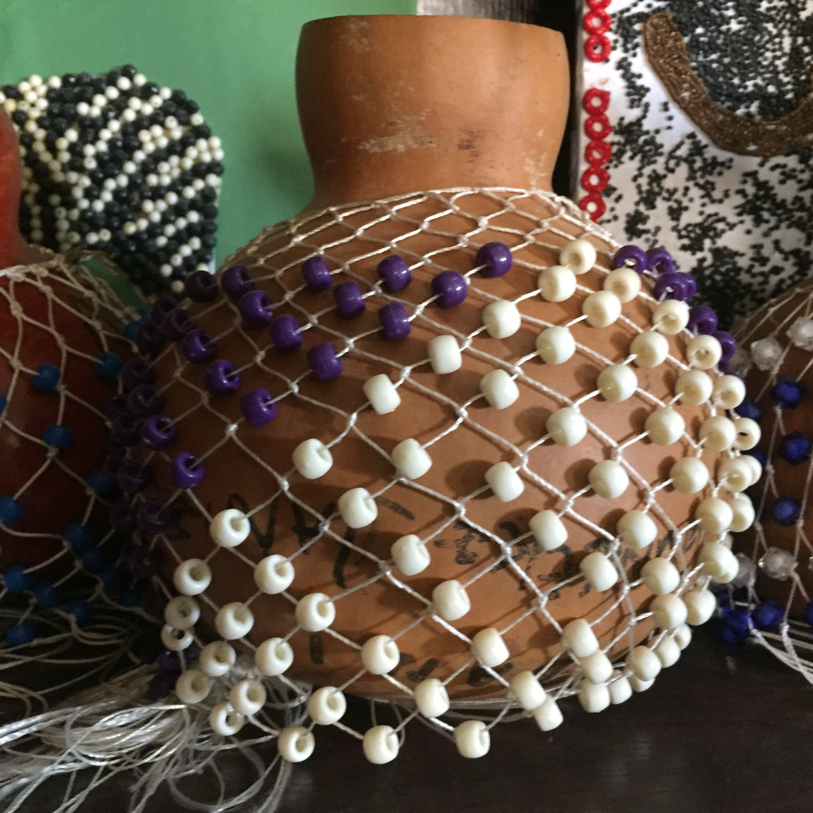
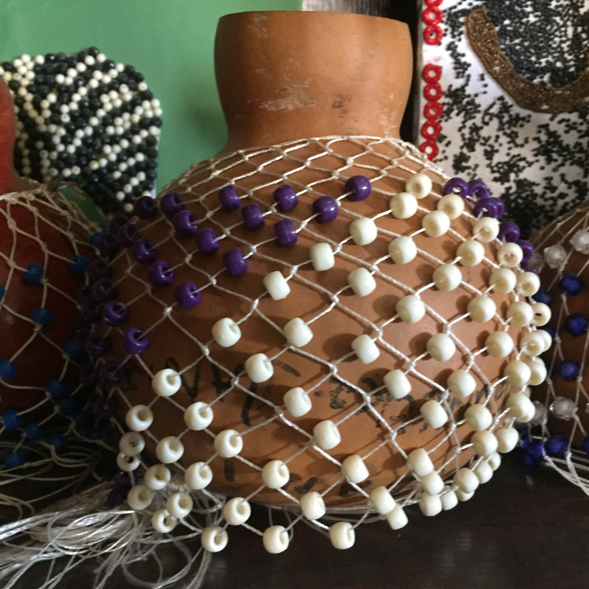

About the Cordinator:Mr Afolabi Mark
Mr Mark is a faithfull and well known teacher of Our Lady and St Francis Cahtolic Collage,Osogbo,Osun state,Nigeria,Africa.Working for over 30 year in the school.He is a very respected teacher by the students of the school.He is a Father and a teacher to many studentes.He teaches Fine art in the collage and is entitled to some other things in the collage.
Check Out Our Art

 
